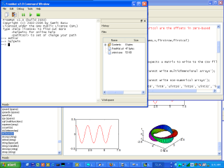
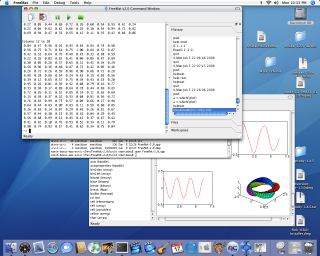
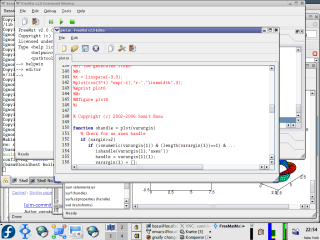

Home
FreeMat is a free environment for rapid engineering and scientific prototyping and data processing. It is similar to commercial systems such as MATLAB from Mathworks, and IDL from Research Systems, but is Open Source. FreeMat is available under the GPL license.
News
Latest News - 2011-11-28 - FreeMat 4.1 Released
We are pleased to annouce the release of FreeMat 4.1. This version provides some significant performance improvements over FreeMat 4.0, as well as a host of bug fixes. Here is a brief list of changes:
- New Just In Time (JIT) compiler -- the new version uses C++ as a backend for code generation, which means a much more substantial set of FreeMat code can now be JIT compiled. FreeMat uses CLANG-LLVM to provide run time compilation of the generated C++ code.
- Universal builds will no longer be officially generated for Mac OS X. However, we are working on a build for Mac OS X that can utilize Macports. This should enable PowerPC Mac OS X users to build their own FreeMat from sources.
- VTK Integration -- FreeMat gets a significant improvement in its ability to perform sophisticated renderings of multidimensional datasets by integrating the Visualization Toolkit (VTK). Simple FreeMat scripts can access nearly all of VTKs functionality.
- Octave Integration -- FreeMat 4.1 has the initial version of an Octave file parser. This parser will allow you to use your existing Octave scripts from within FreeMat. It is still a work in progress, but FreeMat 4.1 ships with a few Octave functions (like factor).
Screenshots
These are quite dated and need to be replaced.| Windows | Mac OS X | Linux |
|  |  |  |
{kind=link}
{kind=link}
{kind=link}
Downloads
- Click to download FreeMat (will attempt to autodetect which version you need)
- Click to be taken to the list of all available downloads
- Click to download FreeMat Manual in PDF form

Getting Help
There are three sources of help (beyond the user manual, of course).- A Google Group has been set up for support. It is open to anyone to join and read, but you must be a member to post, and posts are moderated (necessary after the spam-bots took over the old sourceforge mailing list). The website for the URL is http://groups.google.com/group/freemat. The e-mail address for the group is freemat@googlegroups.com.
- Bug reports should be filed here: Report a Bug
- Feature requests should be filed here: Request a Feature
Documentation
- The manual is available as a PDF here
- Built-in interactive help (Online Help), from the FreeMat Console by typing:
- Tutorials on FreeMat are available here
- The FreeMat Wiki is here
- The FreeMat Blog is here
--> helpwin
FAQ
More of a "wish they were FAQ".- Q. What is FreeMat?
FreeMat is an environment for rapid engineering and scientific processing. It is similar to commercial systems such as MATLAB from Mathworks and IDL from Research Systems, but is Open Source. It is free as in speech and free as in beer.
- Q. Why GPL?
Previous versions of FreeMat were released under MIT licenses. The current version is released under GPL. There are a number of great tools that are available to GPL-ed code (e.g., Qt, FFTW, FFCALL), and FreeMat is now one of them.
- Q. Why another MATLAB clone? Have you heard of Octave, Scilab, etc.?
Yes! FreeMat is chartered to go beyond MATLAB to include features such as a codeless interface to external C/C++/FORTRAN code, parallel/distributed algorithm development (via MPI), and advanced volume and 3D visualization capabilities. As for the open source alternatives, try them out and decide for yourself. Who said choice was a bad thing?
- Q. Is FreeMat 100% compatible with MATLAB? What about IDL?
No. FreeMat supports roughly 95% (a made up statistic) of the features in MATLAB. The following table summarizes how FreeMat stacks up against MATLAB and IDL. Because we like to lead with the positive, here are the features in that are supported:
- N-dimensional array manipulation (by default, N is limited to 6)
- Support for 8,16, and 32 bit integer types (signed and unsigned), 32 and 64 bit floating point types, and 64 and 128 bit complex types.
- Built in arithmetic for manipulation of all supported data types.
- Support for solving linear systems of equations via the divide operators.
- Eigenvalue and singular value decompositions
- Full control structure support (including, for, while, break, continue, etc.)
- 2D plotting and image display
- Heterogeneous array types (called "cell arrays" in MATLAB-speak) fully supported
- Full support for dynamic structure arrays
- Split-radix based FFT support
- Pass-by-reference support (an IDL feature)
- Keyword support (an IDL feature)
- Codeless interface to external C/C++/FORTRAN code
- Native Windows support
- Native sparse matrix support
- Native support for Mac OS X (no X11 server required).
- Function pointers (eval and feval are fully supported)
- Classes, operator overloading
- 3D Plotting and visualization via OpenGL
- Handle-based graphics
- 3D volume rendering capability (via VTK)
- GUI/Widgets
- Widgets/GUI building
- FreeMat-to-MEX interface for porting MATLAB MEX files.
- Q. What platforms are supported?
Currently, Windows, Linux and Mac OS X are supported platforms. Other UNIX environments (such as IRIX/SOLARIS) may work. FreeMat essentially requires GNU gcc/g++ and LLVM/CLANG to build. The Win32 build requires MINGW32. I don't know if FreeMat will work with Windows 98/95/ME or NT4 as I don't have access to any of these platforms. A native port to Mac OS X is now available.
- Q. How do I get it?
Click on the Downloads link here (or on the navigation bar on the left). Installers are available for Windows and Mac OS X, and source and binary packages are available for Linux.
- Q. I found a bug! What now?
Congratulations! Please file a bug report here. FreeMat is a fairly complicated program. Simply saying "it crashed" is not particularly helpful. If possible, please provide a short function or script that reproduces the problem. That will go a long way towards helping us figure out the problem. Also, the bug tracking feature of SourceForge will allow you to put in bugs anonymously, but please don't! Anonymous bug reports are difficult to follow up on.
- Q. Where is function xyz?
There are a number of basic functions that are missing from FreeMat's repetoire. They will be added as time goes on. If there is a particular function you would like to see, either write it yourself or put in an RFE (Request For Enhancement) here.
- Q. Who wrote FreeMat and why?
FreeMat has been in development by a group of volunteers for nearly a decade. The core team is listed here